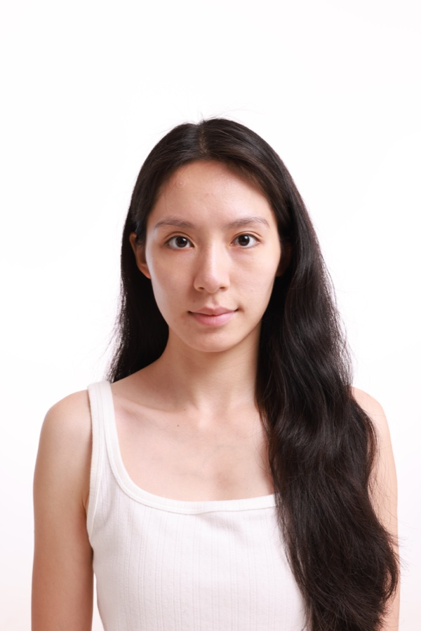
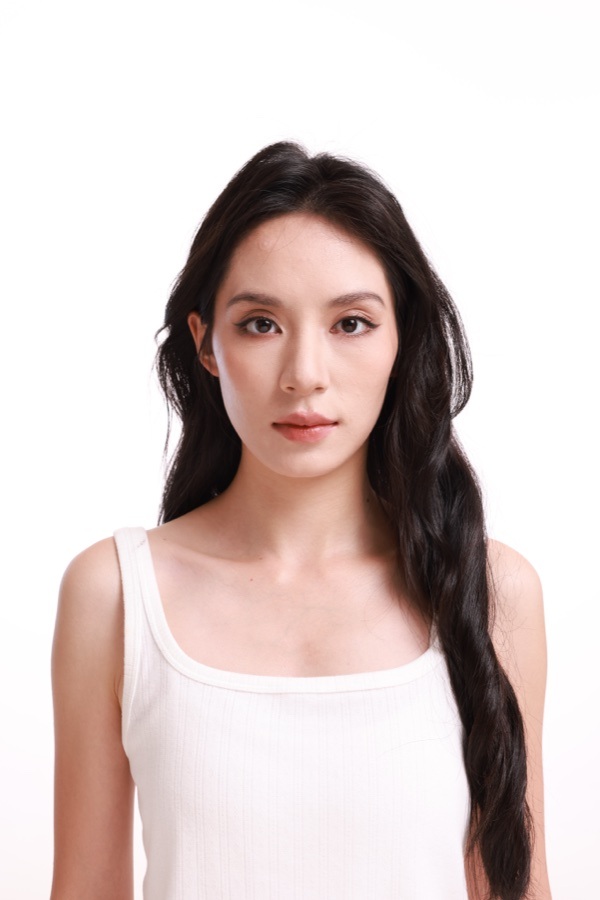
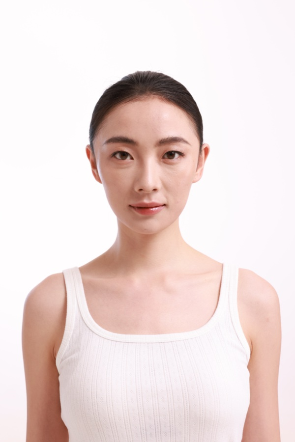
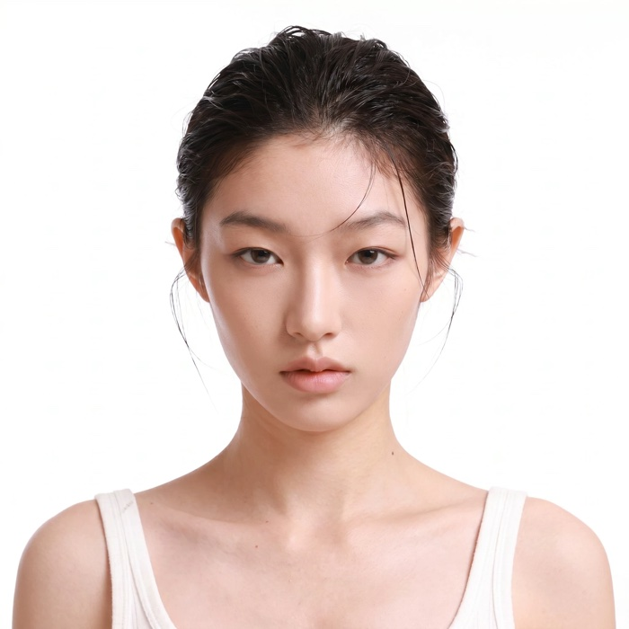
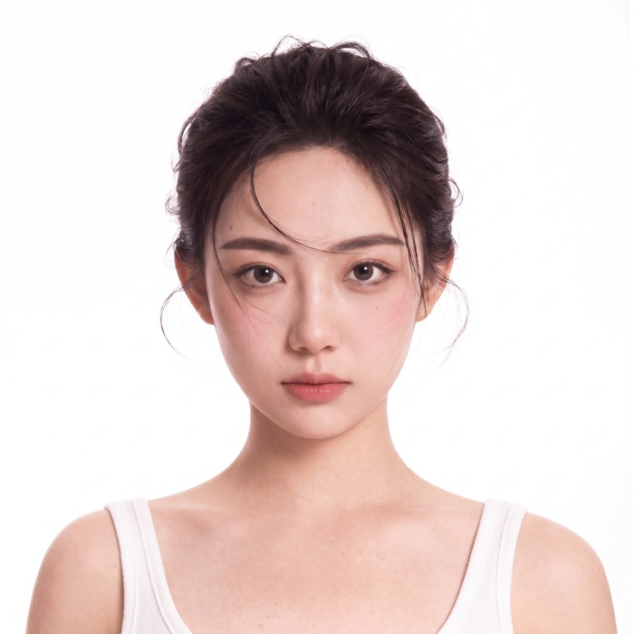
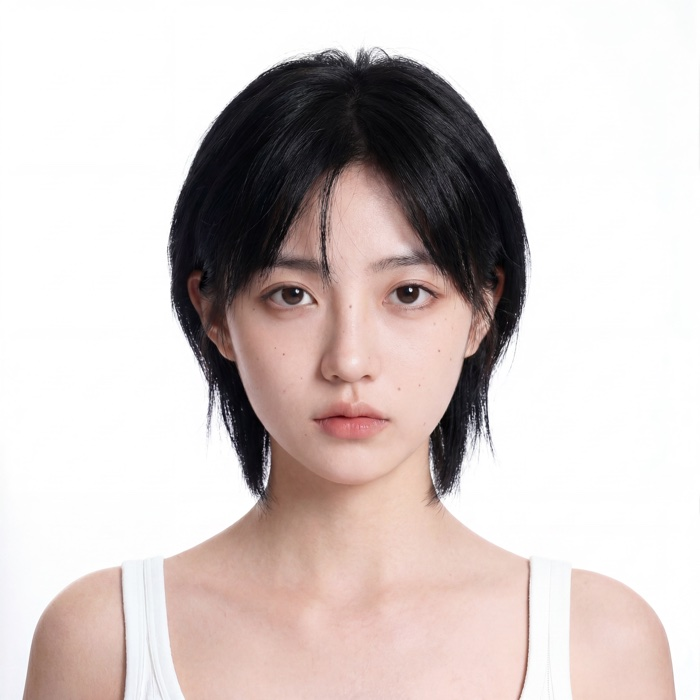
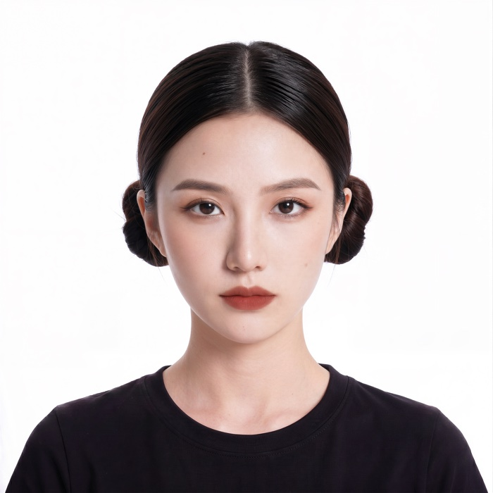

CASE STUDY / AI MODEL LIBRARY
从模特实拍，到 AI 人像库。
真实拍摄为起点，泛化不同发型、妆容与人像风格，
沉淀可用于角色、换装与场景创作的人物资产。
01 / PHOTOGRAPHY
模特实拍
6.4 人像拍摄 · 实拍素材选摘



保留人物基础，拓展视觉方向
02 / AI GENERALIZATION
AI 泛化
从实拍延展多种视觉方向
HAIR发型变化
长短、轮廓与发丝形态
MAKEUP妆容变化
眉眼、唇色与整体妆感
STYLE风格归档
自然、古典、前卫等方向
生成与筛选，沉淀为人物资产
03 / PORTRAIT ASSETS
AI 模特人像库
50 张人像资产 · 此处展示 12 种风格




左右滑动，查看创作流程
01 / 03